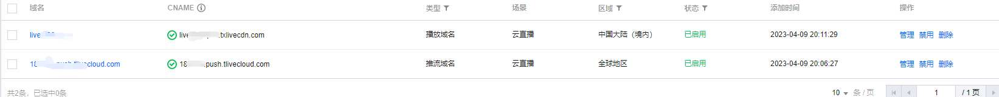

快速搭建百人低延迟直播
- 作者:
- 淡白
- 创建时间：
- 2023-04-10 10:46:04
- 直播 推流 百人直播
摘要：本文介绍了在非公开直播平台进行线上直播的需求，并提出了使用WebRTC（Web Real-Time Communication）的方案。WebRTC是一个支持实时视频、音频和数据传输的开放式网络协议和技术标准，无需安装插件或其他软件即可在Web浏览器之间进行点对点通信。 为了节省时间和减少费用开销，文章建议使用腾讯云提供的云直播服务支持WebRTC。首先需要准备一个域名和腾讯云账号，并登录腾讯云添加云直播域名。推流直播可以通过生成推流地址并使用Web推流工具进行直播，然后可以通过腾讯云提供的在线播放器或自己使用腾讯云提供的SDK编写播放页面进行观看。 总的来说，使用WebRTC和腾讯云云直播服务可以快速搭建可用的线上直播平台，并实现低延迟的直播效果。
原始需求
需要在非公开直播平台进行一场线上直播。如果用腾讯会议、飞书等软件不满足人数要求，大概会有300人左右在线观看。需要让直播延迟很低即时效果好延迟控制在1s以内。在这种需求下让我想到了webrtc，
WebRTC (Web Real-Time Communication) 是一个支持实时视频、音频和数据传输的开放式网络协议和技术标准。它允许在Web浏览器之间进行点对点通信，而无需安装插件或其他软件。 WebRTC是由Google发起并开发，并在W3C和IETF等标准组织中得到认可。它基于JavaScript API和HTML5技术构建，使用了标准的网络通信协议，如UDP、TCP和HTTP，并支持多媒体编解码器，如VP8、VP9、Opus等。 WebRTC主要应用于视频会议、在线教育、在线客服、多人游戏、远程协作等实时通信场景。与传统的视频通信方案相比，WebRTC以其低延迟、高清晰度、易于使用和免费等优势，越来越受到开发者和企业的青睐。
基于腾讯云云直播服务推流
既然需要快速搭建可用服务，那么自己写webrtc服务肯定是来不及了，而且还需要大的带宽服务器这也是不小的花费。为了节省时间和减少费用开销，这里我采用腾讯云提供的云直播服务支持webrtc。
需要准备一个域名以及一个腾讯云账号
登录腾讯云添加云直播域名
云直播域名管理 默认会有一个推流域名，需要自己添加一个播放域名并完成认证。 
开始推流直播
没错就这么快连直播工具都无需下载直接开始直播。先在地址是生成器中生成一个推流地址
会生成很多种推流方式地址，这里我们为了实现低延迟采用webrtc的推流方式。
推流地址生成
在这里粘贴我们复制的webrtc直播推流地址。
web推流直播
通过web推流进行直播，可以选着窗口或屏幕进行分享。
推流后就可以看到我们的播放地址：

播放直播
实测在推流端和播放端不在同一网络情况下（wifi与手机流量） 推流端以1080p60fps的情况进行推流，播放延迟任然保持在1s以内。
因为使用了webrtc所以在播放时也需要专门的播放器： 可以使用腾讯云提供的在线demo播放 播放器demo 或者自己根据腾讯云提供的sdk写一个简单的播放页面下面这是一个例子:
<!DOCTYPE html>
<html lang="en">
<head>
<meta charset="UTF-8">
<meta http-equiv="X-UA-Compatible" content="IE=edge">
<meta name="viewport" content="width=device-width, initial-scale=1.0">
<title>在线播放器</title>
<style>
body {
display: flex;
flex-direction: column;
align-items: center;
justify-content: center;
height: 100vh;
margin: 0;
padding: 0;
}
.container {
display: flex;
flex-direction: column;
align-items: center;
justify-content: center;
}
.video-section {
margin-top: 20px;
margin-bottom: 20px;
}
</style>
</head>
<body>
<h1>视频播放器</h1>
<div class="container">
<div class="input-section">
<label for="video-url">输入视频URL：</label>
<input type="text" id="video-url" placeholder="https://example.com/video.mp4">
<button id="play-btn">播放</button>
</div>
<section class="video-section">
<video id="player-container-id" width="414" height="270" preload="auto" playsinline webkit-playsinline>
</video>
</section>
</div>
<link href="https://web.sdk.qcloud.com/player/tcplayer/release/v4.7.2/tcplayer.min.css" rel="stylesheet" />
<!--播放器脚本文件-->
<script src="https://web.sdk.qcloud.com/player/tcplayer/release/v4.7.2/tcplayer.v4.7.2.min.js"></script>
<script>
const playButton = document.getElementById("play-btn");
const player = TCPlayer('player-container-id', {});
playButton.addEventListener("click", () => {
const videoUrl = document.getElementById('video-url').value;
if (videoUrl) {
player.src(videoUrl);
player.play();
}
});
</script>
</body>
</html>
把这个html部署到服务器或者本地打开使用都行。 注意的是浏览器最好都使用最新的谷歌浏览器。 如有遇到实在播放不了的情况可以使用flv地址进行播放。延迟会增加1-2s